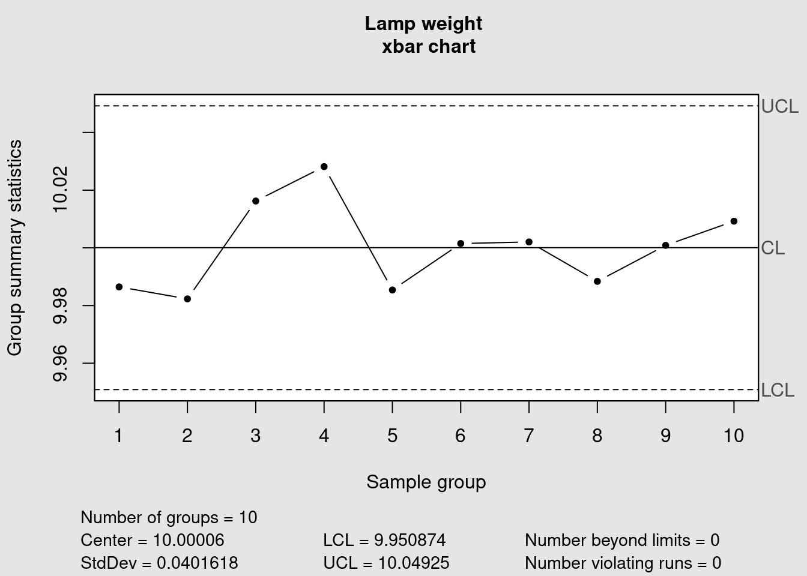
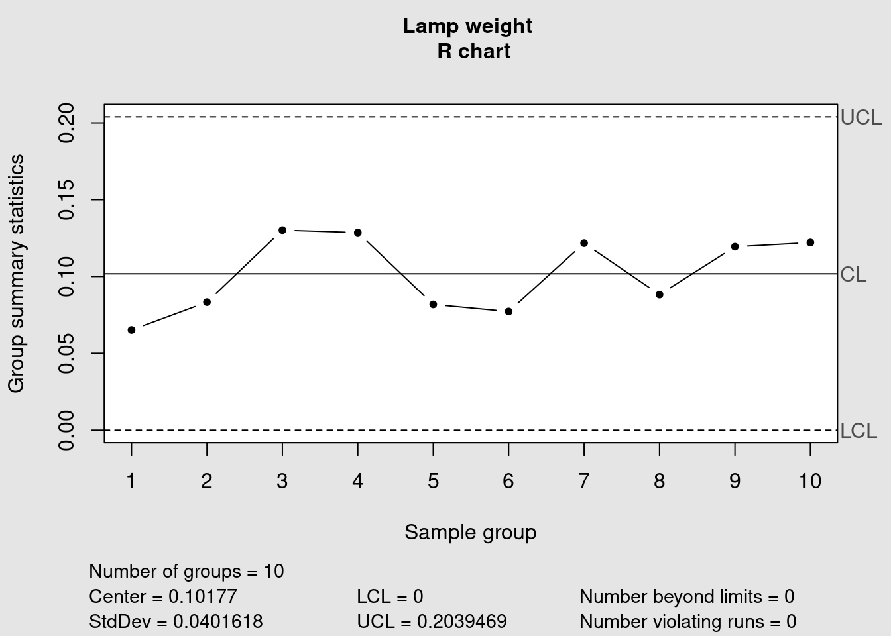
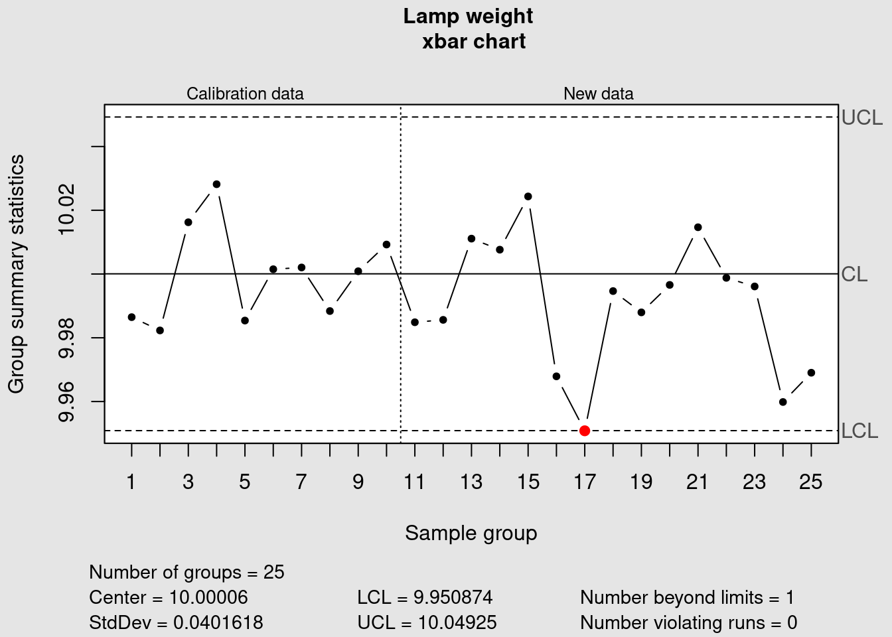
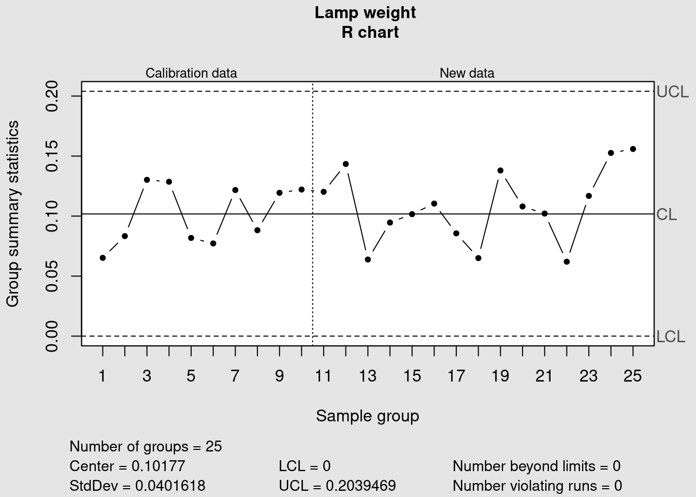

SPC
Adapted from (Bass 2007)
Bamako Lightening is a company that manufactures lamps. The weight of each lamp is critical to the quality of the product. The Production Operator monitors the production process using xbar and R-charts. Samples are taken of six lamps every hour and their means and ranges plotted on control charts.
library(readr)
library(dplyr)##
## Attaching package: 'dplyr'## The following object is masked from 'package:car':
##
## recode## The following objects are masked from 'package:stats':
##
## filter, lag## The following objects are masked from 'package:base':
##
## intersect, setdiff, setequal, unionBamako Lightening is a company that manufactures lamps. The weight of each lamp is critical to the quality of the product. The Production Operator monitors the production process using xbar and R-charts. Samples are taken of six lamps every hour and their means and ranges plotted on control charts. Data is available representing samples taken a period of 25 hours of production.
Start by loading a csv file from our github repository into our R session:
bamako <- readr::read_csv("data/Bamako.csv")##
## ── Column specification ────────────────────────────────────────────────────────
## cols(
## Hour = col_character(),
## Sample1 = col_double(),
## Sample2 = col_double(),
## Sample3 = col_double(),
## Sample4 = col_double(),
## Sample5 = col_double(),
## Sample6 = col_double()
## )bamako <- readr::read_csv(
file = "https://raw.githubusercontent.com/J-Ramalho/J-Ramalho.github.io/master/data/Bamako.csv")The message shows that the loading has worked correctly as all columns have been parsed with type double. Looking at the first five lines to confirm and assess the quality of our data for further processing.
head(bamako)## # A tibble: 6 x 7
## Hour Sample1 Sample2 Sample3 Sample4 Sample5 Sample6
## <chr> <dbl> <dbl> <dbl> <dbl> <dbl> <dbl>
## 1 Hour1 9.99 10.0 9.97 10.0 9.97 9.95
## 2 Hour2 9.97 9.96 9.94 9.97 10.0 10.0
## 3 Hour3 9.98 10.0 9.94 10.1 10.0 10.1
## 4 Hour4 10.1 10.1 9.95 10.0 10.0 10.0
## 5 Hour5 10.0 9.98 9.94 9.94 10.0 10.0
## 6 Hour6 10.0 10.0 9.97 10.0 10.0 9.96In this table each line corresponds to a sampling hour and each column corresponds to a sample number.
xbar and R charts
The package {qcc} has been selected to create the control charts.
library(qcc)## Package 'qcc' version 2.7## Type 'citation("qcc")' for citing this R package in publications.The chart ploting function qcc() already considers that each line corresponds to a sampling event and requires as argument a table containing only the sampling values. For that the Hour column has to be removed.
bamako_clean <- bamako %>% dplyr::select(-Hour)Before entering regular production it is recommended to run a “calibration run”. The calibration run is used to calculate the control limits. Using the first 10 samples a default Shewart xbar chart can be obtained as follows:
qcc(bamako_clean[1:10, ],
type = "xbar",
title = "Lamp weight \n xbar chart",
xlab = "Sample group")
## List of 11
## $ call : language qcc(data = bamako_clean[1:10, ], type = "xbar", title = "Lamp weight \n xbar chart", xlab = "Sample group")
## $ type : chr "xbar"
## $ data.name : chr "bamako_clean[1:10, ]"
## $ data : num [1:10, 1:6] 9.99 9.97 9.98 10.07 10.01 ...
## ..- attr(*, "dimnames")=List of 2
## $ statistics: Named num [1:10] 9.99 9.98 10.02 10.03 9.99 ...
## ..- attr(*, "names")= chr [1:10] "1" "2" "3" "4" ...
## $ sizes : int [1:10] 6 6 6 6 6 6 6 6 6 6
## $ center : num 10
## $ std.dev : num 0.0402
## $ nsigmas : num 3
## $ limits : num [1, 1:2] 9.95 10.05
## ..- attr(*, "dimnames")=List of 2
## $ violations:List of 2
## - attr(*, "class")= chr "qcc"qcc(bamako_clean[1:10, ],
type = "R",
title = "Lamp weight \n R chart",
xlab = "Sample group")
## List of 11
## $ call : language qcc(data = bamako_clean[1:10, ], type = "R", title = "Lamp weight \n R chart", xlab = "Sample group")
## $ type : chr "R"
## $ data.name : chr "bamako_clean[1:10, ]"
## $ data : num [1:10, 1:6] 9.99 9.97 9.98 10.07 10.01 ...
## ..- attr(*, "dimnames")=List of 2
## $ statistics: Named num [1:10] 0.0652 0.0833 0.1302 0.1286 0.0818 ...
## ..- attr(*, "names")= chr [1:10] "1" "2" "3" "4" ...
## $ sizes : int [1:10] 6 6 6 6 6 6 6 6 6 6
## $ center : num 0.102
## $ std.dev : num 0.0402
## $ nsigmas : num 3
## $ limits : num [1, 1:2] 0 0.204
## ..- attr(*, "dimnames")=List of 2
## $ violations:List of 2
## - attr(*, "class")= chr "qcc"Afterwards, the production samples can be assessed against those limits and the control chart rules can be verified. In this example the shewhart rules are used.
qcc(data = bamako_clean[1:10, ],
newdata = bamako_clean[11:25,],
type = "xbar",
title = "Lamp weight \n xbar chart",
xlab = "Sample group")
## List of 15
## $ call : language qcc(data = bamako_clean[1:10, ], type = "xbar", newdata = bamako_clean[11:25, ], title = "Lamp weight \n xba| __truncated__
## $ type : chr "xbar"
## $ data.name : chr "bamako_clean[1:10, ]"
## $ data : num [1:10, 1:6] 9.99 9.97 9.98 10.07 10.01 ...
## ..- attr(*, "dimnames")=List of 2
## $ statistics : Named num [1:10] 9.99 9.98 10.02 10.03 9.99 ...
## ..- attr(*, "names")= chr [1:10] "1" "2" "3" "4" ...
## $ sizes : int [1:10] 6 6 6 6 6 6 6 6 6 6
## $ center : num 10
## $ std.dev : num 0.0402
## $ newstats : Named num [1:15] 9.98 9.99 10.01 10.01 10.02 ...
## ..- attr(*, "names")= chr [1:15] "11" "12" "13" "14" ...
## $ newdata : num [1:15, 1:6] 9.94 10.01 10.01 9.98 10.03 ...
## ..- attr(*, "dimnames")=List of 2
## $ newsizes : int [1:15] 6 6 6 6 6 6 6 6 6 6 ...
## $ newdata.name: chr "bamako_clean[11:25, ]"
## $ nsigmas : num 3
## $ limits : num [1, 1:2] 9.95 10.05
## ..- attr(*, "dimnames")=List of 2
## $ violations :List of 2
## - attr(*, "class")= chr "qcc"qcc(data = bamako_clean[1:10, ],
newdata = bamako_clean[11:25,],
type = "R",
title = "Lamp weight \n R chart",
xlab = "Sample group")
## List of 15
## $ call : language qcc(data = bamako_clean[1:10, ], type = "R", newdata = bamako_clean[11:25, ], title = "Lamp weight \n R char| __truncated__
## $ type : chr "R"
## $ data.name : chr "bamako_clean[1:10, ]"
## $ data : num [1:10, 1:6] 9.99 9.97 9.98 10.07 10.01 ...
## ..- attr(*, "dimnames")=List of 2
## $ statistics : Named num [1:10] 0.0652 0.0833 0.1302 0.1286 0.0818 ...
## ..- attr(*, "names")= chr [1:10] "1" "2" "3" "4" ...
## $ sizes : int [1:10] 6 6 6 6 6 6 6 6 6 6
## $ center : num 0.102
## $ std.dev : num 0.0402
## $ newstats : Named num [1:15] 0.1202 0.1434 0.0638 0.0946 0.1016 ...
## ..- attr(*, "names")= chr [1:15] "11" "12" "13" "14" ...
## $ newdata : num [1:15, 1:6] 9.94 10.01 10.01 9.98 10.03 ...
## ..- attr(*, "dimnames")=List of 2
## $ newsizes : int [1:15] 6 6 6 6 6 6 6 6 6 6 ...
## $ newdata.name: chr "bamako_clean[11:25, ]"
## $ nsigmas : num 3
## $ limits : num [1, 1:2] 0 0.204
## ..- attr(*, "dimnames")=List of 2
## $ violations :List of 2
## - attr(*, "class")= chr "qcc"References
Bass, Issa. 2007. Six Sigma Statistics with Excel and Minitab. 1st ed. McGraw-Hill.